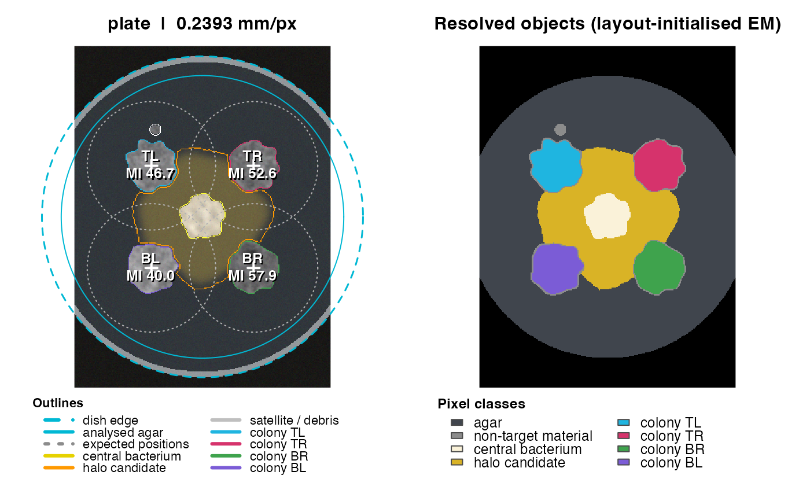

Always look at the QC figure before trusting numbers. The left panel shows the (flat-field corrected) photograph with the detected dish, the analysed agar disk, expected inoculation points and search radii, colony outlines, the central fungal core and hyphal growth; the right panel shows the pixel classification, with each separated colony filled in its own colour (same colours as the outlines on the left). Optional sampling spots are shown as white numbered circles on the photograph.
Examples
sim <- simulate_plate(width = 300, height = 400, seed = 11)
res <- analyze_plate(sim$image, verbose = FALSE)
plot_qc(res)
